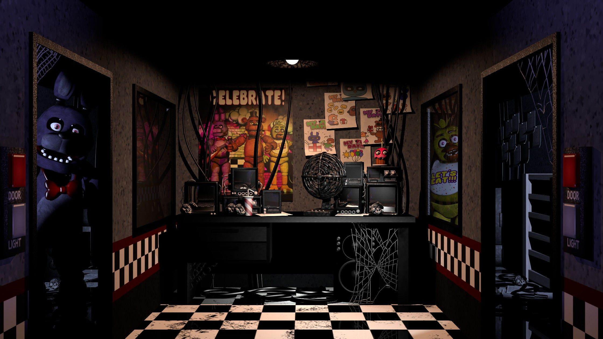
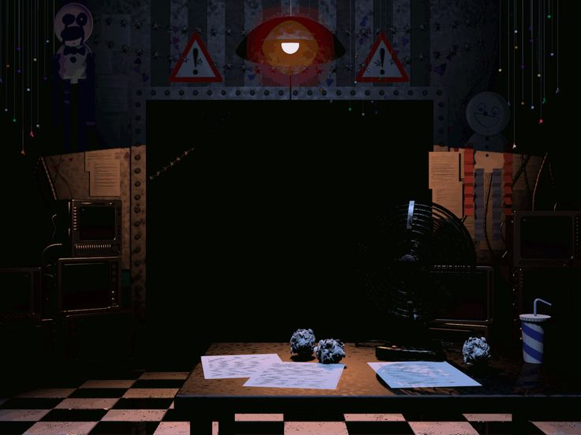
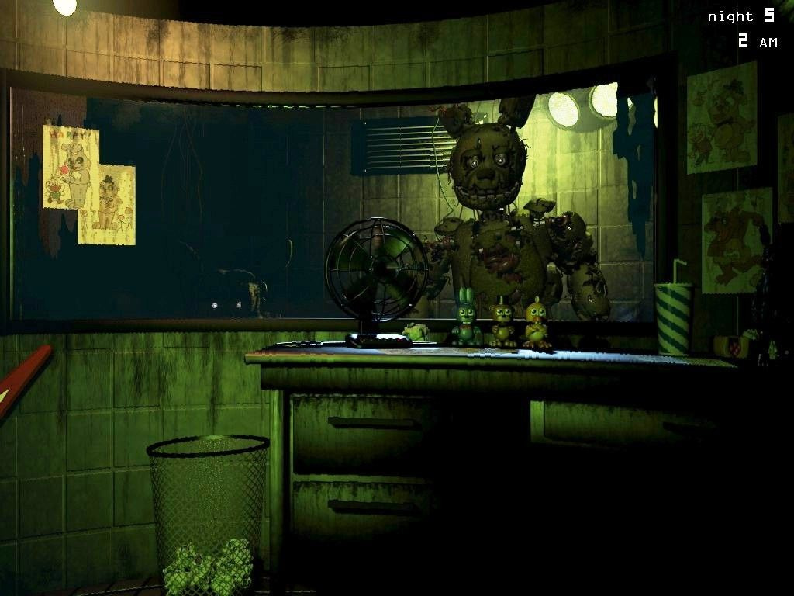
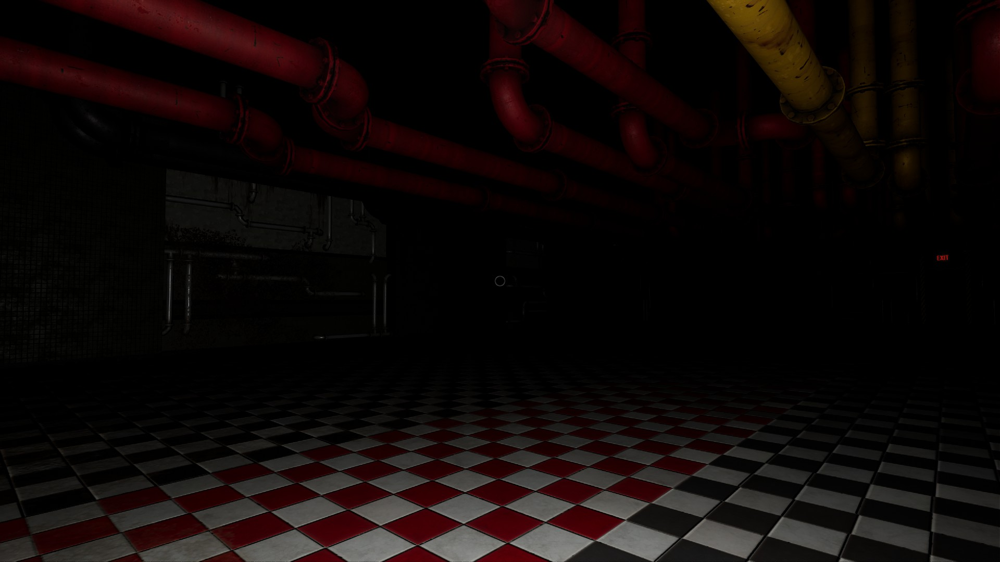
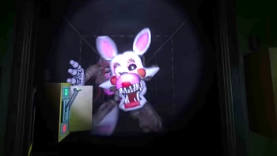
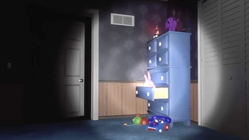

Гайд для получения 100% достижений
Автор гайда: gopro0624 в Steam
Перевод: Michael

Fnaf 1
В Fnaf 1 поначалу будет довольно сложно, но со временем вы освоитесь. все, что вам нужно делать, это направлять камеру на пиратскую бухту и проверять входные двери (не выглядывайте из-за угла, если не хотите, чтобы это удалось). Когда Фокси достигнет последней стадии, прежде чем атаковать, закройте левую дверь. Бонни и Фокси заходят в левую дверь, а Чика и Фредди - в правую. Когда Бонни будет у двери, вы сможете слегка разглядеть его тень, если включите свет. Чика не показывает свою тень, но она действительно стоит перед окном. Фредди останется в конце коридора (справа от двери) и никуда не уйдет. если вы его там не видите (если он был в конце коридора), значит, он пробрался в вашу комнату, и у вас есть как минимум полминуты, пока он не выскочит из-за вас. так что всегда следите за ним так же внимательно, как и за Фокси.

Fnaf 2
Fnaf 2 - самый простой вариант, если вы используете виртуальную реальность. Это то, что вам нужно сделать. Всегда держите камеру в нужном месте, потому что это самая важная камера. всегда держите маску в руках, если вы используете виртуальную реальность. игрокам на ПК придется быстро схватить маску. время от времени проверяйте коридор и вентиляционные отверстия. если вы заметите что-то в вентиляционных отверстиях, наденьте маску, пока это не исчезнет. если в коридоре что-то есть, вам не нужно надевать маску, но если в коридоре есть увядший (или сломанный) аниматроник, посветите на него фонариком, чтобы замедлить его движение. если это фокси, то помигайте фонариком снова и снова, чтобы отпугнуть его. если вы слышите очень громкие помехи, значит, Мангл в вентиляционном отверстии. наденьте маску, чтобы она ушла. если вы слышите тихие помехи, значит, она в камере, которую вы включили, или в коридоре. если в вашу комнату войдет увядший аниматроник, вам нужно быстро надеть маску. если вы опоздаете, этот увядший аниматроник испугает вас.

Fnaf 3
Эта игра удобна как для виртуальной реальности, так и для ПК, но не так проста. если вы работаете на ПК, вы можете нажать кнопку E, чтобы использовать звуковую подсказку в камере, в которой вы находитесь. звуковая подсказка предотвращает появление ловушки. спрингтрап время от времени заглядывает в вентиляционные отверстия, поэтому смотрите на другой монитор справа от вас. в зависимости от того, в какой комнате он находится, зависит и вентиляционное отверстие, в котором он находится. если вы увидите его в вентиляционном отверстии, закройте его, прежде чем он выйдет. вентиляционные отверстия ведут в ваш офис. одно из них, расположенное рядом с вами, заканчивается где-то в районе вашего офиса, например, у окна и двери. если вы увидите его в окне, не паникуйте. быстро поставьте свой звуковой сигнал в коридоре рядом с окном. если вы увидите его в дверях, то у вас нет другой надежды, кроме как поддерживать зрительный контакт. Но если вы будете действовать достаточно быстро, то сможете поместить звуковой сигнал прямо рядом с ним. теперь перейдем к фантомасам. фантомы напугают вас, но не закончат игру. вы останетесь живы, но произойдет ошибка в одной из трех систем. вентиляционная система, система видеонаблюдения и аудиосистема. вентиляционная система - это ваш кислород. если в нем обнаружена ошибка, вы начнете отключаться. система видеонаблюдения исправна... камера. если при этом обнаружится ошибка, вы не сможете увидеть камеру. аудиосистема позволяет использовать звуковые сигналы. если при этом обнаружится ошибка, вы не сможете переместить springtrap в эту область. если какой-либо из них не работает, перезагрузите его на панели управления слева от вас. теперь аниматроники phantoms и то, что они делают. на вашей основной камере появится изображение фантома bb (или мальчика с воздушными шарами). быстро переключите мониторы или зону съемки. фантом мангл похож на фантома би Би, но он появляется на вентиляционном мониторе. фантом Фокси будет случайным образом появляться в вашей комнате рядом с вашим контрольным монитором. что бы вы ни делали, не смотрите ему в глаза. тогда он потеряет к вам интерес и уйдет. призрака Фредди можно увидеть редко. но если вы увидите его в окне, не смотрите ему в глаза. скоро он дойдет до конца вашего окна. призрачная Чика появляется на одном из игровых автоматов. если вы будете смотреть на нее слишком долго, она либо напугает вас, либо сделает то же самое, что Фокси.

Dark Rooms
В игре есть четыре разных уровня темных комнат: "забавы с плюштрапом", "забавы с вв", "плюшевые малыши" и "забавный фокси", и "забавы с плюштрапом", и "забавы с вв" - это одно и то же. для начала посветите на него фонариком, а затем выключите его. слушайте внимательно. если вы услышите смех или шаги, подождите около секунды и посветите фонариком. если вы все сделали правильно, он должен был пошевелиться. повторяйте это, пока он не встанет на крестик. у вас есть на это 90 секунд. плюшевый малыш очень, очень выносливый. вероятность неудачи составляет 75%. в начале игры есть три плюшевых малыша. посветите на них фонариком, чтобы они ушли. ваш фонарик-вспышка обладает определенным запасом энергии, но со временем он подзарядится. лучший способ сэкономить электроэнергию - просто быстро мигать фонариком. плюшевые малыши будут приходить к вам в разных местах. если вы увидите одного из них, направьте на него свой фонарик, пока он не исчезнет, затем быстро продолжайте светить, пока не увидите другого. повторяйте это снова и снова до 6 утра (надеюсь, вы получите приз, который того стоит, хехех). с funtime foxy все довольно просто. пройдите не менее 3 шагов, затем посветите фонариком. если увидите funtime foxy, двигайтесь в другую сторону. повторяйте это, пока не дойдете до конца.

Vent Repair
На мой взгляд, ремонт вентиляционных отверстий - второй по страшности игровой режим. вам нужно починить вентиляционные отверстия, чтобы они были расположены под углом "идеальные 72 градуса". первый уровень - "калечить". переключайте рычаги, нажимайте кнопки и т.д. После диалога голос начнет издавать сбои, и откроется входная дверь. нажмите на кнопку и потяните за рычаг, и прямо перед вами появится мангл, который затем отползет в сторону. затем откроется дверь справа от вас. после этого вверху есть переключатель. потяните за него, затем за другой рычаг, который находится в желтой коробочке. обязательно загляните в другое вентиляционное отверстие, чтобы убедиться, что там нет мангла. если вы здесь ползаете, значит, Мангл вылезает через вентиляционное отверстие. свет вашего головного фонаря должен отпугнуть ее. как только вы нажмете на рычаг, из трубок начнет поступать газ. есть колеса, которые нужно вращать. после этого над первой дверью будет кнопка, нажмите на нее, затем потяните за рычаг, который находится в желтом поле. при этом не забудьте проверить вентиляционные отверстия на предмет засорения. тогда откроется третья дверь. внизу есть небольшой люк. откройте его и посмотрите на него. обратите внимание на переключение цветов подсветки и нажмите цветные кнопки, соответствующие цветам, которые отображает подсветка. затем потяните за рычаг. теперь переходим ко второму уровню (чувак, я много пишу, поэтому просто расскажу тебе все по-быстрому). желтые квадратики с красным огоньком. следуйте по проводу и нажимайте кнопку, затем повторяйте, пока все это не будет выполнено. проделайте то же самое три раза, и Энард, проходя через третью дверь, трижды облажается, застав вас врасплох. затем он делает короткий прыжок, и двери закрываются. затем вы переходите к следующей части уровня, и вам нужно расставить шестеренки в определенных местах, чтобы получить больше шестеренок и провести все это через нужную дверь. затем вы идете в котельную и нажимаете пронумерованные кнопки, чтобы переключить трубы с этим номером, чтобы добраться до конца. сделайте то же самое снова, но есть еще одна кнопка, которая переключает все, и тогда вы выиграли * у меня перехватывает дыхание, потому что я говорил очень быстро*

Night Terrors
Мой самый нелюбимый уровень и, на мой взгляд, самый страшный. просто прислушайтесь к звуковым сигналам и к тому, откуда они доносятся, и обязательно посветите фонариком по комнате, а если увидите аниматроника или что-то странное, посветите на него. если аниматроник стоит у двери, быстро закройте его. если он приближается к двери, поищите глаза и подождите, пока они приблизятся, а затем закройте дверь. на уровне веселого Фредди посветите фонариком на Фредди, если он находится в конце коридора. если вы услышите чье-то дыхание, закройте дверь. боннет и бон-бон не закончат вашу игру, но напугают вас. на уровне цирковой малышки подождите, пока она подойдет вплотную к шкафу, а затем закройте дверцу. затем подождите, пока плюшевые малышки не сойдут с ума, а затем откройте дверцу. повторяйте это до 6 утра